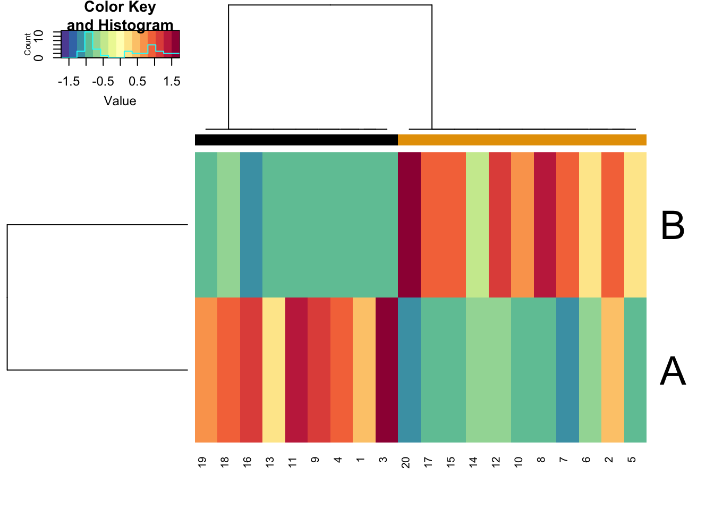
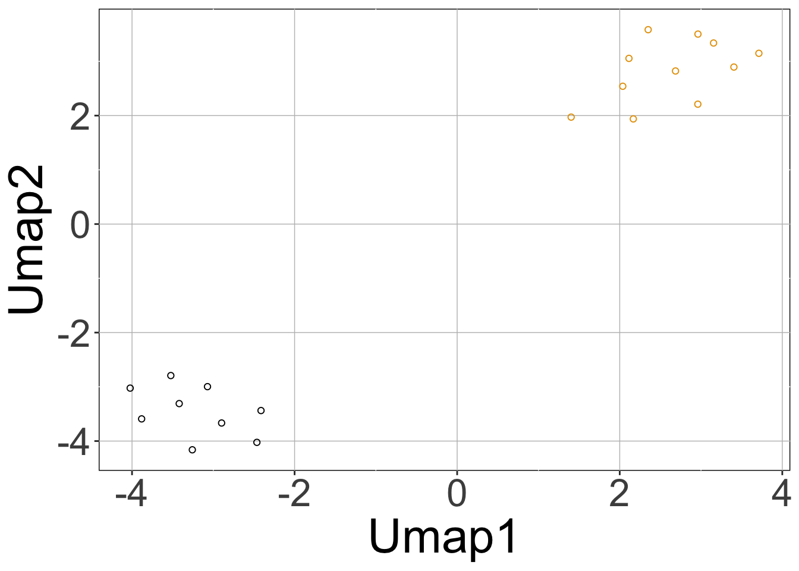
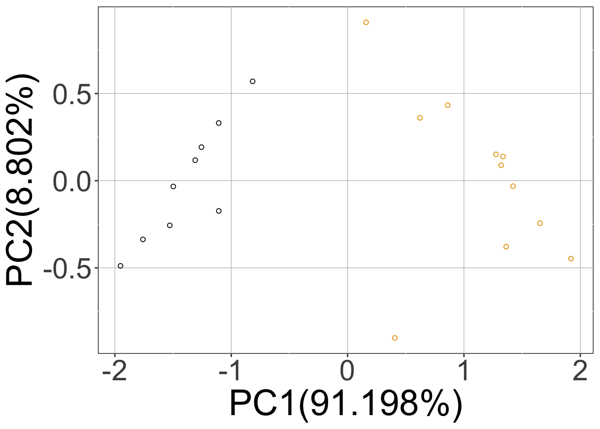
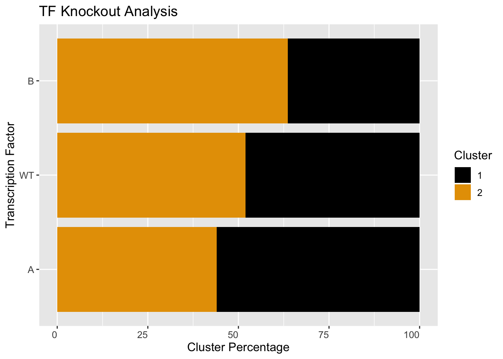
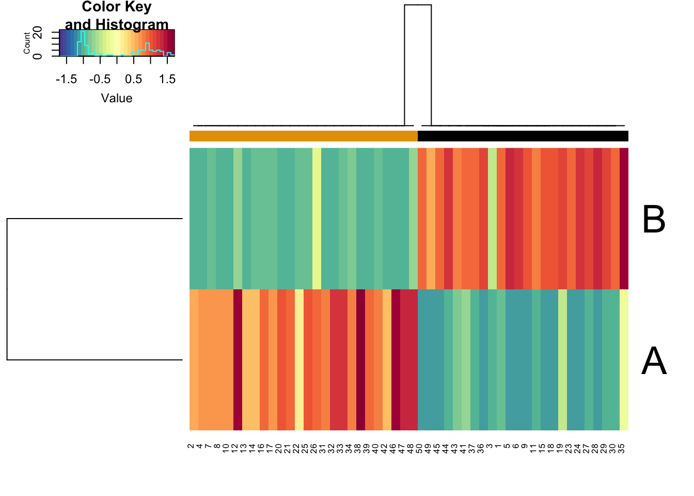
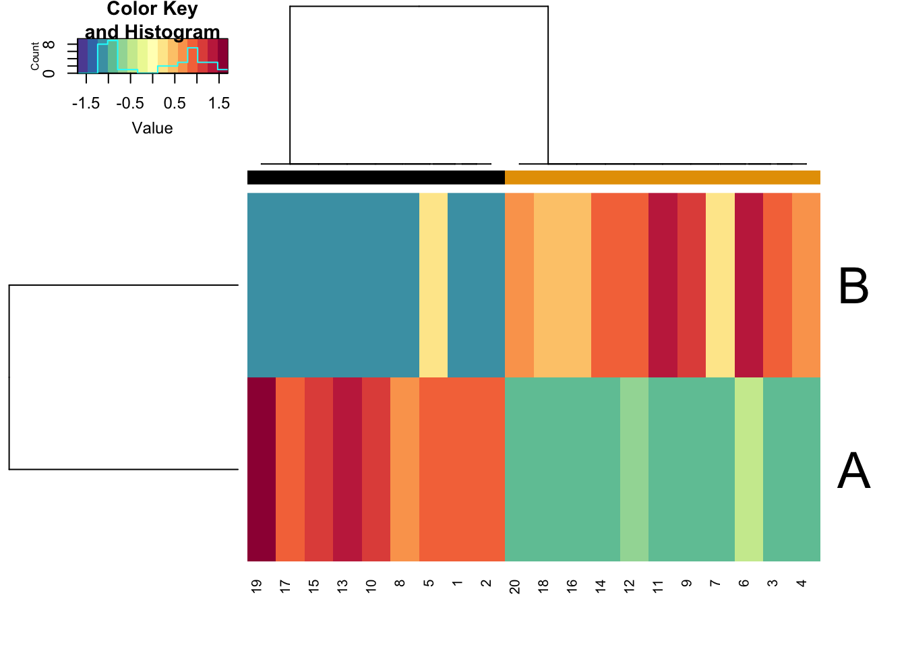
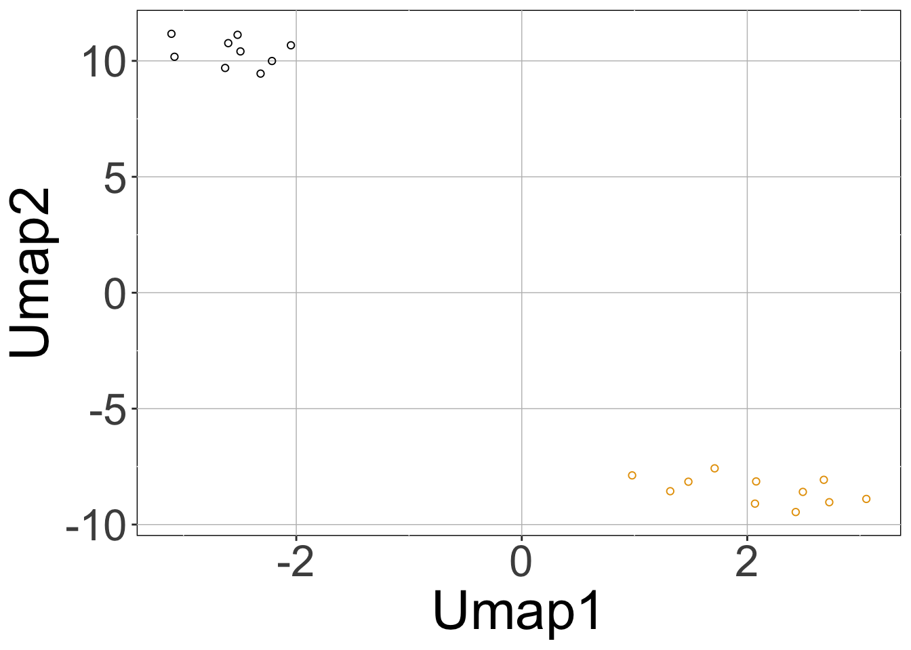
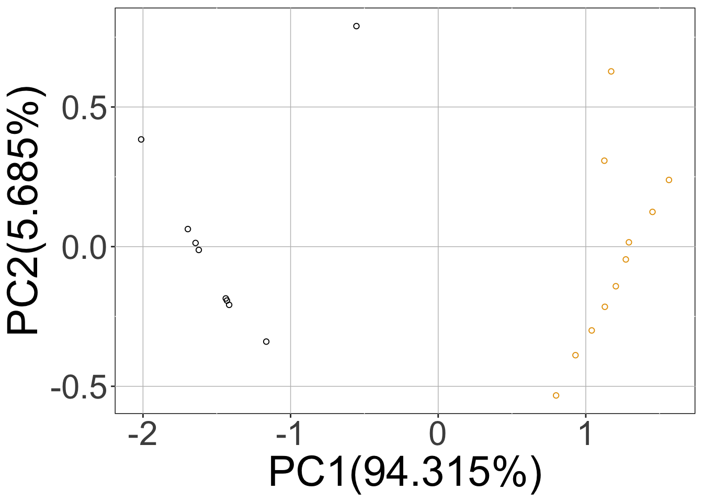
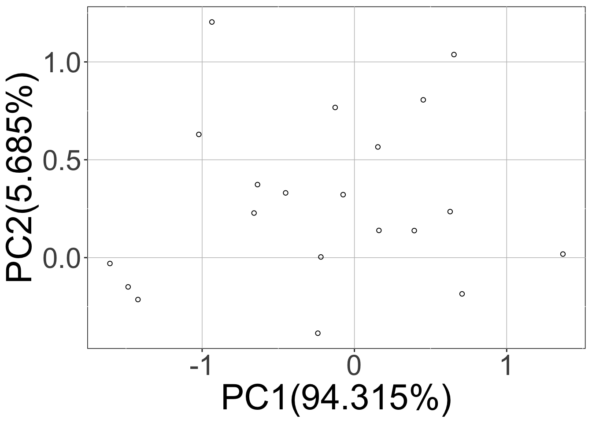
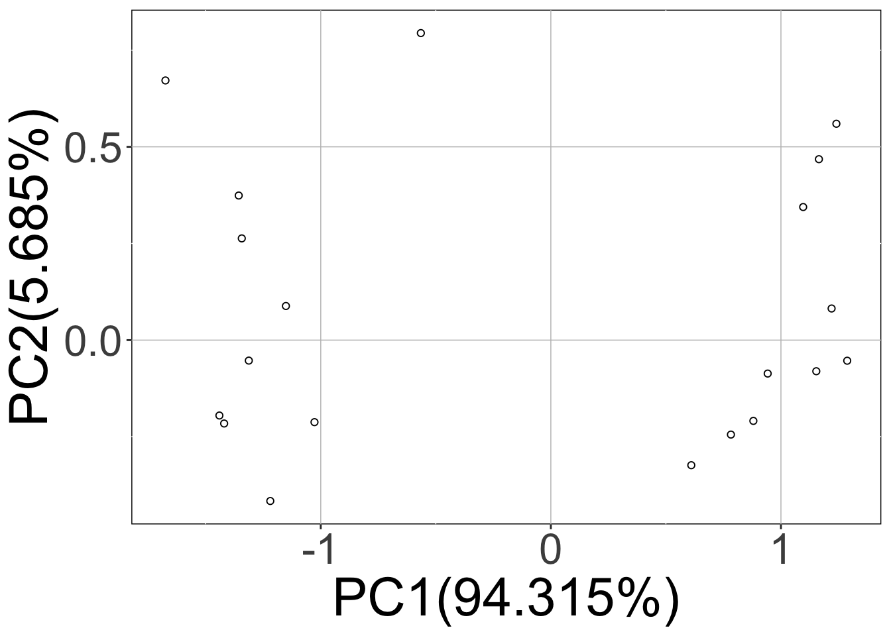

vignettes/sRACIPE.Rmd
sRACIPE.RmdThis document illustrates the use of sRACIPE to simulate any circuit or network or topology (used interchangeably) and analyze the generated data. sRACIPE implements a randomization-based method for gene circuit modeling. It allows us to study the effect of both the gene expression noise and the parametric variation on any gene regulatory circuit (GRC) using only its topology, and simulates an ensemble of models with random kinetic parameters at multiple noise levels. Statistical analysis of the generated gene expressions reveals the basin of attraction and stability of various phenotypic states and their changes associated with intrinsic and extrinsic noises. sRACIPE provides a holistic picture to evaluate the effects of both the stochastic nature of cellular processes and the parametric variation.
if (!requireNamespace("BiocManager", quietly = TRUE))
install.packages("BiocManager")
BiocManager::install("sRACIPE")Or install the development version of the package.
BiocManager::install(“vivekkohar/sRACIPE”)library(sRACIPE)## Warning: package 'SummarizedExperiment' was built under R version 3.6.2## Warning: package 'S4Vectors' was built under R version 3.6.2## Warning: package 'IRanges' was built under R version 3.6.2## Warning: package 'DelayedArray' was built under R version 3.6.2## Warning: package 'BiocParallel' was built under R version 3.6.2For simplicity, we will start with the toggle switch with mutual inhibition and self activation of both genes as a test case. Additionally, to keep the simulations fast, we will use fewer models, small integration time and longer integration step size. We recommend using the default settings for most parameters for actual simulations.
One can use the topology stored in a text file or loaded as a dataframe. The typical format of the topology file is a 3 column file where the first column is name of the source gene, second column is name of the target gene and last column is the interaction type (1 - activation, 2-inhibition). The first line should contain the header (Source Target Interaction). We will work with a demo circuit from the package.
## Source Target Type
## 1 A B 2
## 2 B A 2
## 3 A A 1
## 4 B B 1We will use a reduced number of models (using numModels) for demonstration. The simulations will return a RacipeSE object.
rSet <- sRACIPE::sracipeSimulate(circuit = demoCircuit, numModels = 20,
plots = FALSE, integrateStepSize = 0.1,
simulationTime = 30)## circuit file successfully loaded## Generating gene thresholds## generating thresholds for uniform distribution1...## Running the simulations## ========================================We can plot the simulated data using the sracipePlotData function or using plots=TRUE in sracipeSimulate. The data can be normalized before plotting. Otherwise it will be normalized by the plotting function. By default, two clusters are identified and models colored according to hierarchical clustering.
rSet <- sRACIPE::sracipeNormalize(rSet)
rSet <- sRACIPE::sracipePlotData(rSet, plotToFile = FALSE)
The simulations can be used to perform in-silico perturbation analysis. For example, here we will limit a gene’s production rate to mimic its knockdown and show how that changes the relative proportion of models in different clusters.
data("demoCircuit")
rSet <- sRACIPE::sracipeSimulate(circuit = demoCircuit,
numModels = 50, plots = FALSE,
integrateStepSize = 0.1,
simulationTime = 30)## circuit file successfully loaded## Generating gene thresholds## generating thresholds for uniform distribution1...## Running the simulations## ========================================kd <- sRACIPE::sracipeKnockDown(rSet, plotToFile = FALSE,
reduceProduction=50)
The network can be plotted in an interactive viewer or html file in the results folder.
sRACIPE::sracipePlotCircuit(rSet, plotToFile = FALSE)One can perform stochastic simulations similarly by specifying additional parameters to the sracipeSimulate function, namely, nNoise (the number of noise levels at which the stochastic simulations should be carried out), initialNoise (the starting noise level) and noiseScalingFactor (the multiplicative factor by which noise should be reduced for multiple noise levels). For annealing, use anneal=TRUE alongwith the above mentioned parameters. For simulations at one noise level only, use nNoise = 1 and set initialNoise parameter to the specific noise.
Now the returned object will contain additional elements in the assays which correspond to the simulations at different noise levels (noise specified by the name of the element).
rSet <- sRACIPE::sracipeSimulate(circuit = demoCircuit, numModels = 20,
initialNoise = 15, noiseScalingFactor = 0.1,
nNoise = 2,
plots = TRUE, plotToFile = FALSE,
integrateStepSize = 0.1,
simulationTime = 30)## circuit file successfully loaded## Generating gene thresholds## generating thresholds for uniform distribution1...## Running the simulations## ========================================
Here, calling the sracipeSimulate function simulated the circuit at zero noise level as well as the two (nNoise) other noise levels 15 (initialNoise), 1.5 (initialNoise*noiseScalingFactor). The first three plots (hierarchical clustering heatmap, Umap, PCA) correspond to deterministic data and the last two plots contain the data from stochastic simulations projected on the principal components of the deterministic simulations.
Note that the rSet now contains stochastic simulations as well as additional elements like umap, pca, assignedClusters. These are added when the data is plotted. As mentioned previously, the additional elements of the assays are named “15” and “1.5” which correspond to noise levels.
For annealing simulations, one can set anneal=TRUE in the sracipeSimulate function. With anneal=FALSE (constant noise), simulations at different noise levels are independent of each other. These are useful if one is primarily interested in the gene expressions at different noise levels and at zero noise (used for normalizing the data). With annealing, the steady state solutions at higher noise levels are used as the intial conditions for lower noise levels such that each model converges to its most stable state when the noise is zero.
Using annealing, ideally the number of noise levels should be very large and noiseScalingFactor close to 1 as we want to reduce the noise very slowly. In practice, we found nNoise ~ 30 and initialNoise ~50 divided by sqrt(number_gene) as good starting values. Constant noise and annealing noise simulations pca plots can be used for better approximations of these parameters. The initialNoise should be such that there is a single cluster at this high noise level (essentially the gene expression values are random and circuit topology has little effect). Next, noiseScalingFactor should be adjusted such that there are sufficient noise levels when this single cluster splits into multiple clusters observed in deterministic simulations.
With annealing, the models converge to their most stable steady state at zero noise. Thus, the number of models is more stable clusters will increase and number in less stable clusters will decrease. Note that for non zero noise, the stable states can be different from the stable states at zero noise. In our illustrative example shown abpve, the previous two stable states of a toggle circuit are no longer stable at high noise (“15”) and instead the previously unstable high high state is stable now. Briefly, noise can change the stable states and zero noise simulations using annealing can
gives us an idea about the relative stability of states when there are multiple stable states.
Further, one can modify the parameters and/or initial conditions and simulate the circuit with modified parameters and/or initial conditions using the parameters genParams = FALSE and/or genIC = FALSE.
rSet <- sRACIPE::sracipeSimulate(circuit = demoCircuit, numModels = 20,
plots = FALSE, integrate = FALSE)## circuit file successfully loaded## Generating gene thresholds## generating thresholds for uniform distribution1...## Running the simulations## ========================================params <- sRACIPE::sracipeParams(rSet)
modifiedParams <- as.matrix(params)
modifiedParams[,1] <- 0.1*modifiedParams[,1]
sRACIPE::sracipeParams(rSet) <- DataFrame(modifiedParams)
rSet <- sRACIPE::sracipeSimulate(rSet, plots = FALSE, genParams = FALSE)## Running the simulations## ========================================Knockout of a gene is implemented by changing the production rate and initial condition of the gene to zero. The knockOut parameter in the function sracipeSimulate can be used to perform these knockout simulations. If simulations are to be carried out for knockouts of different genes, the genes should be specified as a list where each list element will contain the names of the gene to be knocked out. For example, knockout = list(“gene1”, “gene2”, c(“gene3”, “gene4”), “gene5”) will knockout gene1, gene2, gene5 one by one and knockout gene3 and gene4 simultaneously. knockOut = “all”, each gene is knocked out one by one and the results are returned as an element knockOutSimulations which, similar to stochasticSimulations, is a list of dataframes containing the gene expressions obtained by knockout one or more genes. Enabling plots=TRUE will plot the results. As the expression of knockout gene is zero, we compute PCA with unperturbed genes for both the unperturbed simulations as well as the perturbed simulations. So for each knockout, we have two plots containing the scatter plot of unperturbed simulations and perturbed simulations on the PCs of unperturbed simulations (excluding the gene to be perturbed).
Kohar V, Lu M (2018). “Role of noise and parametric variation in the dynamics of gene regulatory circuits.” npj Systems Biology and Applications, 4, 40. https://www.nature.com/articles/s41540-018-0076-x.
## R version 3.6.1 (2019-07-05)
## Platform: x86_64-apple-darwin15.6.0 (64-bit)
## Running under: macOS Mojave 10.14.3
##
## Matrix products: default
## BLAS: /Library/Frameworks/R.framework/Versions/3.6/Resources/lib/libRblas.0.dylib
## LAPACK: /Library/Frameworks/R.framework/Versions/3.6/Resources/lib/libRlapack.dylib
##
## locale:
## [1] en_US.UTF-8/en_US.UTF-8/en_US.UTF-8/C/en_US.UTF-8/en_US.UTF-8
##
## attached base packages:
## [1] parallel stats4 stats graphics grDevices utils datasets
## [8] methods base
##
## other attached packages:
## [1] sRACIPE_1.3.4 Rcpp_1.0.3
## [3] SummarizedExperiment_1.16.1 DelayedArray_0.12.2
## [5] BiocParallel_1.20.1 matrixStats_0.55.0
## [7] Biobase_2.46.0 GenomicRanges_1.38.0
## [9] GenomeInfoDb_1.22.0 IRanges_2.20.2
## [11] S4Vectors_0.24.2 BiocGenerics_0.32.0
## [13] BiocStyle_2.14.4
##
## loaded via a namespace (and not attached):
## [1] jsonlite_1.6.1 gtools_3.8.1 assertthat_0.2.1
## [4] askpass_1.1 BiocManager_1.30.10 GenomeInfoDbData_1.2.2
## [7] yaml_2.2.0 pillar_1.4.3 backports_1.1.5
## [10] lattice_0.20-38 glue_1.3.1 reticulate_1.14
## [13] digest_0.6.23 RColorBrewer_1.1-2 XVector_0.26.0
## [16] colorspace_1.4-1 htmltools_0.4.0 Matrix_1.2-18
## [19] plyr_1.8.5 pkgconfig_2.0.3 bookdown_0.17
## [22] zlibbioc_1.32.0 purrr_0.3.3 scales_1.1.0
## [25] gdata_2.18.0 RSpectra_0.16-0 tibble_2.1.3
## [28] openssl_1.4.1 farver_2.0.3 ggplot2_3.2.1
## [31] umap_0.2.4.1 lazyeval_0.2.2 magrittr_1.5
## [34] crayon_1.3.4 memoise_1.1.0 evaluate_0.14
## [37] fs_1.3.1 MASS_7.3-51.5 gplots_3.0.1.2
## [40] tools_3.6.1 lifecycle_0.1.0 stringr_1.4.0
## [43] munsell_0.5.0 compiler_3.6.1 pkgdown_1.4.1
## [46] caTools_1.17.1.4 rlang_0.4.4 grid_3.6.1
## [49] RCurl_1.95-4.12 rstudioapi_0.10 htmlwidgets_1.5.1
## [52] visNetwork_2.0.9 labeling_0.3 bitops_1.0-6
## [55] rmarkdown_2.0 gtable_0.3.0 reshape2_1.4.3
## [58] R6_2.4.1 gridExtra_2.3 knitr_1.26
## [61] dplyr_0.8.3 rprojroot_1.3-2 KernSmooth_2.23-16
## [64] desc_1.2.0 stringi_1.4.5 tidyselect_0.2.5
## [67] xfun_0.12